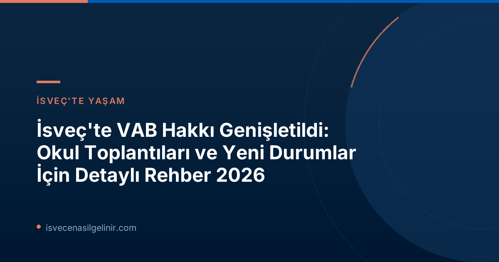

İsveç'te VAB Nedir ve Neden Önemlidir?
VAB (Vård av Barn), İsveç'te çocuğu hastalanan veya belli özel durumlarda bakıma ihtiyacı olan ebeveynlere tanınan, işten izin alma ve bu süre boyunca devletten ödenek alma hakkıdır. İsveç Sosyal Sigortalar Kurumu Försäkringskassan tarafından yönetilen bu sistem, ailelerin çocuklarının bakımıyla ilgilenirken ekonomik güvence sağlamayı amaçlar. Çocukların sağlığı ve refahı İsveç toplumunda öncelikli olup, VAB sistemi bu ilkenin önemli bir yansımasıdır.
2026 İtibarıyla Yeni VAB Hakları ve Koşulları
1 Ocak 2026 tarihinden itibaren yürürlüğe giren ve Försäkringskassan tarafından duyurulan yeniliklerle, VAB kapsamı üç yeni durumla genişletilmiştir. Bu değişiklikler, ebeveynlerin çocuklarının hayatındaki kritik anlarda yanlarında olmasını kolaylaştırmayı hedeflemektedir.
Okul ve Kreş Toplantıları için VAB
Yeni düzenlemelerin en dikkat çekici maddesi, ebeveynlerin çocuklarının anaokulu veya okulundaki toplantılar için VAB kullanabilmesidir. Bu hak, çocuğun hastalığı veya özel bir işlevsel engeli (funktionsnedsättning) nedeniyle okul veya kreş ile yapılan önemli toplantıları kapsamaktadır. Bu sayede, ebeveynler çocuklarının eğitim ve sağlık süreçlerine daha aktif katılım sağlayabileceklerdir.
Sosyal Hizmetler ile İlgili Durumlar için VAB
Ebeveynler artık, çocuklarıyla ilgili olarak sosyal hizmetler (socialtjänsten) tarafından yürütülen bir soruşturmaya (utredning) veya ön değerlendirmeye (förhandsbedömning) katılmaları gerektiğinde de VAB alabilecekler. Bu durum, hassas süreçlerde ebeveyn katılımının önemini vurgulamaktadır.
Çocuğun Bakım İhtiyaçları için Personel Eğitimi VAB'ı
Bir diğer önemli yenilik ise, ebeveynlerin çocuklarının özel öz bakım ihtiyaçları (egenomsorg) hakkında anaokulu veya okul personelini eğitmesi gerektiğinde VAB alabilmesidir. Örneğin, çocuğunuz diyabet veya şiddetli egzama gibi özel bir bakım gereksinimi duyuyorsa ve bu konuda okul personelini bilgilendirip eğitmeniz gerekiyorsa, bu süre için VAB kullanma hakkınız bulunmaktadır.
Yeni VAB Düzenlemelerinin İlk Yarıyıl İstatistikleri
Försäkringskassan'ın reformun ilk altı ayına dair (Ocak-Haziran 2026) yaptığı takip, yeni olanakların kullanımına dair değerli bilgiler sunuyor. Analist Alma Wennemo Lanninger'e göre, en sık kullanılan yeni VAB nedeni okul veya anaokulu toplantıları için alınan izinler olmuştur.
| Durum | Faydalanan Kişi Sayısı |
|---|---|
| Toplam Benzersiz Kişi Sayısı | Yaklaşık 2.500 |
| Okul/Kreş Toplantısı İçin VAB | 1.580 |
| Sosyal Hizmetler Soruşturması/Ön Değerlendirmesi İçin VAB | 870 |
| Personel Eğitimi (Öz Bakım) İçin VAB | 120 |
Önemli Notlar:
- Yeni VAB fırsatları, toplam VAB ödenekleri içinde küçük bir paya sahip olsa da, ihtiyaç duyan aileler için büyük bir kolaylık sağlamaktadır.
- Çoğu ebeveyn bu yeni hakları günün sadece bir kısmı için kullanmıştır.
- Yeni VAB hakları ağırlıklı olarak okul çağındaki çocuklar, özellikle de 11 yaşındakiler için kullanılmıştır.
İsveç'te yaşarken haklarınızı iyi bilmek ve doğru bir şekilde kullanmak hem kendiniz hem de çocuklarınız için önemlidir. Özellikle bu tarz yeni düzenlemeler, ailelerin hayat kalitesini artıran önemli adımlardır. İsveç'in sosyal refah devleti anlayışını yansıtan bu uygulamalar hakkında daha fazla bilgi almak için Försäkringskassan web sitesini ziyaret edebilirsiniz veya sverigemedborgarskapsprov.com adresindeki diğer rehberlerimizi inceleyebilirsiniz.
VAB Başvurusu Nasıl Yapılır?
VAB başvuruları genellikle Försäkringskassan'ın online hizmetleri aracılığıyla yapılır.
- Bir VAB durumu oluştuğunda, mümkün olan en kısa sürede işvereninizi bilgilendirmeniz gerekmektedir.
- Ardından, Försäkringskassan'ın web sitesi üzerinden (Mina sidor) veya telefonla başvurunuzu yapabilirsiniz.
- Başvurunuzda, VAB gerekçesini (çocuğun hastalığı, yeni eklenen özel durumlar vb.) ve bakıma ihtiyacı olan çocuğun bilgilerini belirtmeniz istenir.
- Yeni eklenen durumlar için yapılan başvurularda, ilgili toplantı veya eğitim belgeleri gibi kanıtlar istenebilir. Bu nedenle, ilgili belgeleri saklamanız önemlidir.
Unutulmaması Gerekenler ve İpuçları
- Erken Bildirim: İşvereninizi ve Försäkringskassan'ı mümkün olan en kısa sürede bilgilendirmek, herhangi bir aksaklık yaşanmaması adına önemlidir.
- Belgeleme: Özellikle yeni VAB koşulları altında (okul toplantıları, sosyal hizmetler ile ilgili süreçler, personel eğitimi) ilgili belgeleri (toplantı davetiyeleri, eğitim planları vb.) saklamak ve Försäkringskassan istediğinde sunmaya hazır olmak önemlidir.
- Sürekli Takip: Försäkringskassan'ın web sitesini düzenli olarak kontrol ederek güncel kurallar ve olası yeni değişiklikler hakkında bilgi sahibi olabilirsiniz.
Bu yeni VAB düzenlemeleri, İsveç'te ebeveyn olmanın getirdiği sorumlulukları yerine getirirken aynı zamanda desteklenmenizi sağlayan önemli bir adımdır. Bilinçli bir şekilde haklarınızı kullanmanız, hem sizin hem de çocuklarınızın refahı için kritik öneme sahiptir.
Referanslar:
- Försäkringskassan. "Ny möjlighet att vabba har nyttjats mest för möten i skolan". Erişim: 2 Temmuz 2026.
- İsveç Vatandaşlık Testi
İsveç Göçmenlik ve VAB Hakları Hakkında Daha Fazla Bilgi Edin
İsveç'te yaşam, çalışma ve aile hakları hakkında sorularınız mı var? Uzman danışmanlarımızla iletişime geçin ve sürecinizi kolaylaştırın.